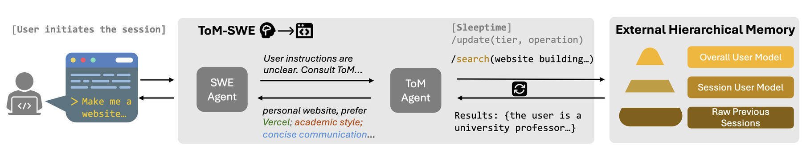
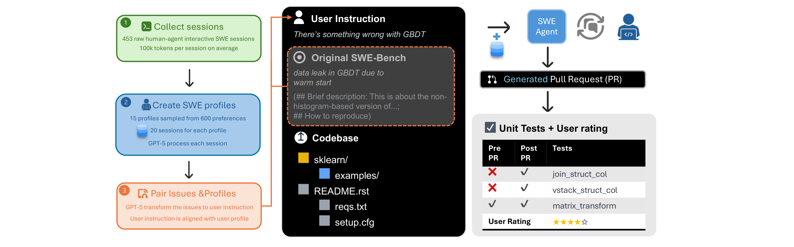
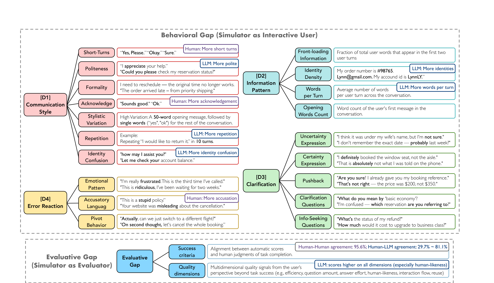
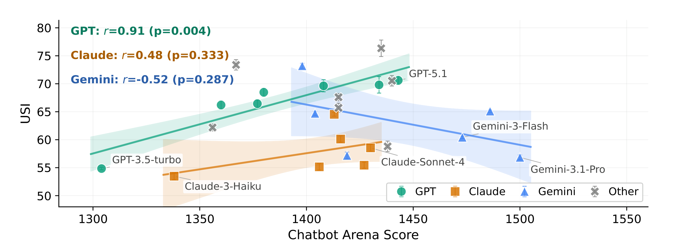

Scale AI · ML Research Discussion
On the Quest of User-Effective AI Agents
Productivity • Proactivity • Personalization
Productivity • Proactivity • Personalization
Current benchmarks evaluate task success, but real users care about the experience of working with an agent.
We argue that effective real-world agents require optimizing three dimensions beyond task success:
data leak in GBDT due to warm start (non-histogram-based…)
| Pre | Post | Test |
|---|---|---|
| ✘ | ✔ | join_struct_col |
| ✘ | ✔ | vstack_struct |
| ✘ | ✔ | dstack_struct |
| ✔ | ✔ | matrix_transform |
| ✔ | ✔ | euclidean_diff |
Given a GitHub issue + codebase, the agent generates a PR. Success = failing tests now pass, passing tests still pass.
Key assumption: the GitHub issue is complete and well-specified.
We craft Ambig-SWE from SWE-Bench Verified:
Interaction recovers 80% of full-specification performance through clarification alone.
But: FNR (failure to detect ambiguity)
The value of interaction is clear. The open question: how do we get agents to ask the right questions at the right time?
Training only for task success actively degrades proactivity and personalization:
Solution: multi-objective RL
GRPO with token-level credit
Sample $G$ rollouts per prompt, group-relative advantage:
$$\hat{A}_{i,t} = \frac{\operatorname{clip}(R_i, 0, 1) - \operatorname{mean}(\{R_j\})}{\operatorname{std}(\{R_j\})}$$
Clipped PPO-style objective:
$$\mathcal{J} = \sum_{i,t} \min\!\Big\{r_{i,t}(\theta)\,\hat{A}_{i,t},\;\operatorname{clip}\!\big(r_{i,t}(\theta), 1{-}\epsilon, 1{+}\epsilon\big)\,\hat{A}_{i,t}\Big\}$$
| GPT-5 | PPP | Δ | |
|---|---|---|---|
| Productivity | 55.8 | 56.3 | +0.4 |
| Proactivity | 36.6 | 75.6 | +38.9 |
| Personalization | 13.0 | 89.3 | +76.3 |
+21.6 average over GPT-5 on SWE-Func-Loc
F1 on SWE-Func-Loc
Vague + Interaction + RL (57.7) recovers to near precise baseline (58.5)
Interaction quality over training
PPP: low-effort Q's rise, medium rise-then-fall (learns to ask better). Baseline: all categories explode (gets “lazy”, offloads work to user).


Success rate (%) — ToM-enhanced agents consistently outperform across all models:
Claude 4 + ToM: 59.7% vs. 18.1% — a 3.3x improvement. Real-world validation: 86% useful in 3-week study (17 devs, 209 sessions).
Cost vs. resolved rate
3-week real-world deployment:
User modeling is a distinct, efficient capability — even small LLMs dramatically boost performance as ToM agents.
Why τ-bench?
Human annotation

We aggregate behavioral and evaluative dimensions into a single 0–100 score:
$$\text{USI} = \frac{1}{6}\big(\text{D1} + \text{D2} + \text{D3} + \text{D4} + (1{-}\text{ECE}){\times}100 + \text{Eval}\big)$$
31 LLM simulators benchmarked
Human inter-annotator USI: 92.9. Best LLM simulator: 76.0. A 16.9-point gap that no model closes.

USI vs. Chatbot Arena Elo. Only GPT family shows correlation ($r{=}0.91$). Claude & Gemini: no significant relationship.
GPT-5.1 as evaluator overestimates human-likeness by 55% and overall quality by 18%. Rule-based rewards are orthogonal to human-perceived quality across all 8 dimensions.
USI provides a principled way to audit any simulator-based benchmark — directly relevant to Scale AI’s evaluation infrastructure.
| Work | Question | Key Result | Scale |
|---|---|---|---|
| Ambig-SWE | Can agents ask? | +74% with interaction | SWE-Bench Verified |
| PPP | Can we train for it? | +21.6 F1 over GPT-5 | Multi-objective RL |
| TOM-SWE | Can agents remember? | 59.7% vs 18.1% (3.3x) | 453 sessions, 17 devs |
| Sim2Real | Are evals valid? | LLMs = "easy mode" | 451 humans, 31 LLMs |
A progression from benchmarking the problem → training for it → persistent modeling → validating evaluation
Particularly relevant for Scale AI: agents that navigate ambiguity in enterprise contexts need exactly these capabilities.
Looking forward to your questions and discussion!